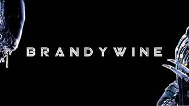
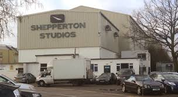
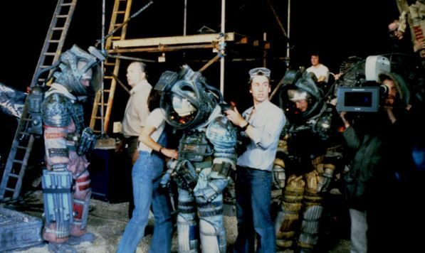
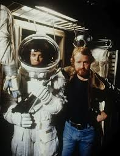
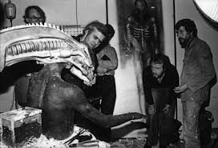
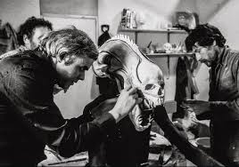
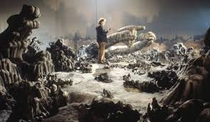
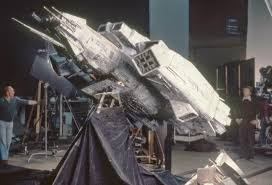

La distribución estuvo a cargo de 20th Century Fox,
este estudio fue uno de los grandes estudios de Hollywood, fundado en
1935 tras la fusión de Twentieth Century Pictures y Fox Film
Corporation. Se convirtió en un pilar de la industria gracias a
clásicos como The Sound of Music (1965), Star Wars (1977) y Alien
(1979). En 2019 fue adquirido por The Walt Disney Company, pasando a
llamarse 20th Century Studios, aunque mantuvo su legado como
responsable de algunas de las sagas más influyentes del cine.
Producción

Logo de Brandywine Studios
La película fue producida por Brandywine Productions,
una pequeña productora estadounidense fundada por Walter Hill, David
Giler y Gordon Carroll a fines de los años 70. Su nombre está ligado
casi exclusivamente a la saga Alien, aunque sus miembros también
trabajaron como guionistas, productores o directores en otros
proyectos.
Rodaje

Sitio de rodaje de Shepperton Studios
El rodaje principal se llevó a cabo en los Shepperton Studios de
Inglaterra, uno de los complejos más importantes del cine británico.
Allí se construyeron los enormes escenarios de la nave Nostromo,
diseñados para que los actores se sintieran realmente encerrados en un
espacio opresivo.
Fotografías del rodaje


Los trajes espaciales: eran tan pesados y calurosos que varios actores
se desmayaron durante las grabaciones. Fue necesario colocar sistemas
de ventilación para evitar golpes de calor.


El diseño del alien: el artista suizo H. R. Giger creó al xenomorfo y
los escenarios alienígenas con un estilo biomecánico único, mezcla de
lo orgánico y lo tecnológico.


Para los exteriores del planeta y la nave alienígena se usaron
maquetas detalladas y paisajes en miniatura. Se usaron técnicas de
iluminación y humo para dar la sensación de inmensidad. Incluso, para
las escenas de los astronautas caminando en la superficie, se usaron
trajes espaciales en niños (los hijos de Ridley Scott) para que las
proporciones de la nave parecieran mucho más grandes de lo que eran en
realidad.